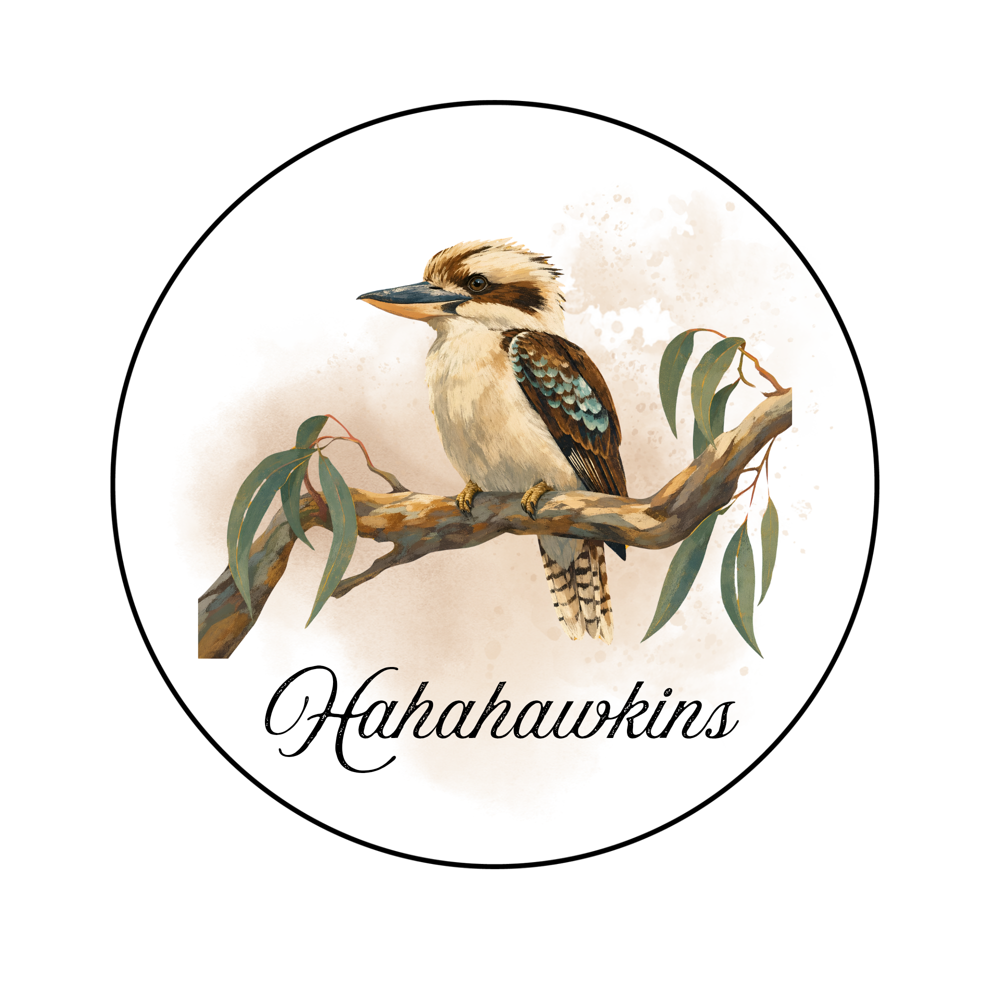

Welcome to HAHAHAWKINS

Logo ini menampilkan Burung Raja Udang yang melambangkan kecepatan, ketepatan, dan fokus kelompok TIK dalam mengeksekusi tugas dengan cara yang unik dan tidak pasaran. Kepakan sayapnya dihiasi aksen sirkuit digital sebagai simbol inovasi, data, dan konektivitas teknologi, sekaligus membentuk inisial huruf "H" secara tersirat sebagai identitas HAHAHAWKINS. Paduan warna Teal, Sage Green, dan Charcoal memberikan kesan kreatif, tenang, dan profesional tanpa terlalu mencolok.